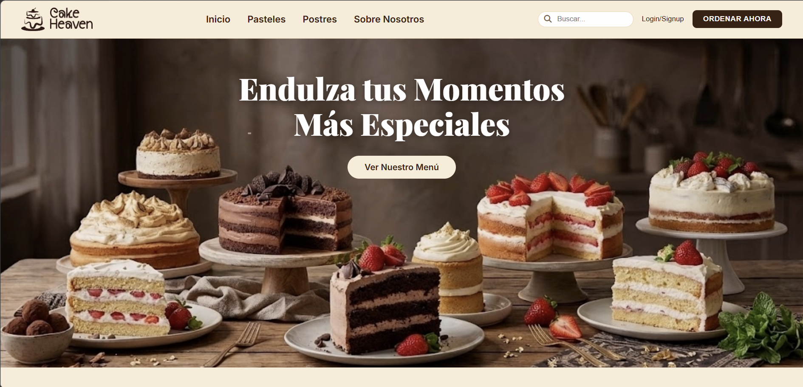

Web & Apps

Cake Heaven
Sitio web interactivo y completamente responsivo desarrollado desde cero con HTML estructurado, estilos avanzados en CSS y lógica dinámica en JavaScript nativo para optimizar la experiencia de usuario.